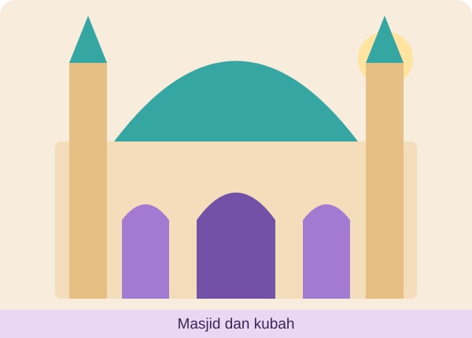
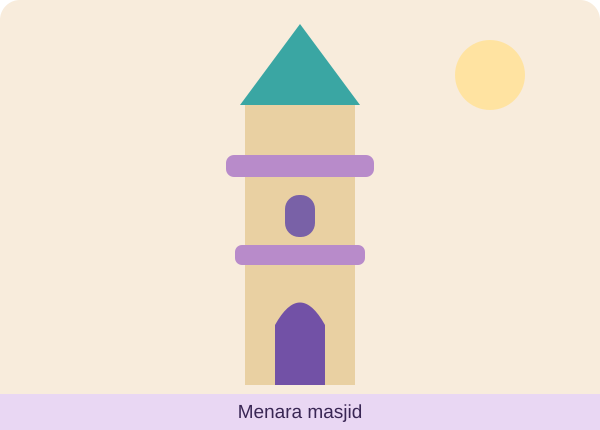
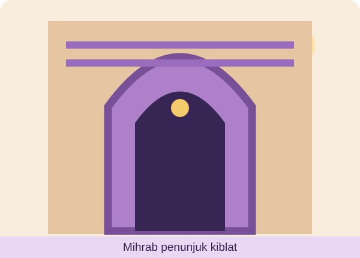
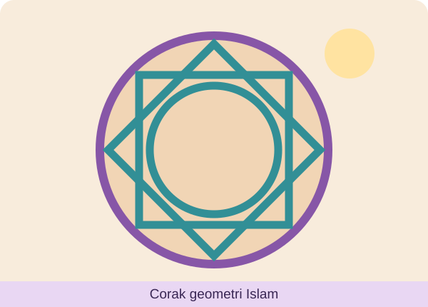
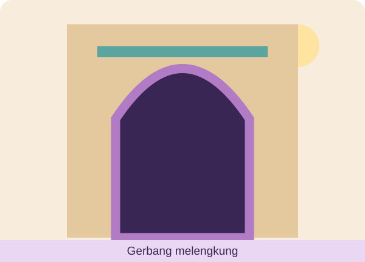

Sejarah Tingkatan 1 · Topik 8.5 · Belajar → Reka → Hantar
📚 1. Jelajah Nota Interaktif — Topik 8.5
Sumbangan Tamadun Islam dalam Bidang Seni Bina. Terokai 8 bahagian nota lengkap sebelum menjadi arkitek muda.
🕌
SENI BINA ISLAM
Keindahan • Kegunaan • Keselesaan • Ilmu
📷 Nota Bergambar — Contoh Seni Bina Islam Sebenar
Teliti foto bangunan sebenar di bawah sebagai rujukan pembelajaran. Selepas membaca nota, tekan butang 💡 Lihat idea untuk lakaran untuk melihat contoh lukisan kartun.
Foto: Wikimedia Commons — tekan gambar untuk sumber dan kredit.
01
Pengenalan seni bina Islam
🏛️
Masjid ialah pusat ibadat, pendidikan dan penyebaran ilmu. Pada zaman Nabi Muhammad SAW, Masjid Quba menjadi antara contoh awal pembinaan masjid. Seni bina Islam berkembang mengikut keperluan masyarakat dan tempat.
✏️ Contoh lakaran untuk idea murid

Gunakan ilustrasi ini sebagai inspirasi. Labelkan ciri seni bina yang dilukis dan terangkan fungsinya dengan ayat sendiri.
02
Ciri-ciri seni bina Islam
☀️
Seni bina Islam menitikberatkan ruang cahaya dan pengudaraan, keselesaan, keselamatan, ketahanan, kebersihan, pengasingan ruang yang sesuai dan reka bentuk mengikut iklim setempat.
✏️ Contoh lakaran untuk idea murid

Gunakan ilustrasi ini sebagai inspirasi. Labelkan ciri seni bina yang dilukis dan terangkan fungsinya dengan ayat sendiri.
03
Menara, mihrab dan mimbar
🕌
Menara: struktur tinggi yang berkaitan dengan laungan azan. Mihrab: penanda arah kiblat pada dinding masjid. Mimbar: tempat imam atau khatib menyampaikan khutbah.
✏️ Contoh lakaran untuk idea murid

Gunakan ilustrasi ini sebagai inspirasi. Labelkan ciri seni bina yang dilukis dan terangkan fungsinya dengan ayat sendiri.
04
Perhiasan yang indah
🎨
Bangunan dihias dengan kaligrafi, corak geometri, ukiran tumbuhan, lengkungan, kubah dan jubin. Hiasan menonjolkan kemahiran seni serta suasana yang indah dan harmoni.
✏️ Contoh lakaran untuk idea murid

Gunakan ilustrasi ini sebagai inspirasi. Labelkan ciri seni bina yang dilukis dan terangkan fungsinya dengan ayat sendiri.
05
Keunikan reka bentuk
✨
Pintu gerbang melengkung, ruang terbuka dan susunan tiang membentuk identiti seni bina Islam. Penggunaan air dan cahaya boleh menghasilkan suasana nyaman, tenang dan seimbang.
✏️ Contoh lakaran untuk idea murid

Gunakan ilustrasi ini sebagai inspirasi. Labelkan ciri seni bina yang dilukis dan terangkan fungsinya dengan ayat sendiri.
06
Elemen estetika
🌟
Estetika ialah nilai keindahan. Seni bina Islam menggabungkan kecantikan dan fungsi: corak arabes, motif geometri, kaligrafi serta cahaya yang menyinari ruang.
✏️ Contoh lakaran untuk idea murid
Gunakan ilustrasi ini sebagai inspirasi. Labelkan ciri seni bina yang dilukis dan terangkan fungsinya dengan ayat sendiri.
07
Sesuai dengan budaya setempat
🌿
Bahan binaan, bumbung, susun atur dan hiasan boleh berbeza mengikut iklim, teknologi serta tradisi masyarakat. Contohnya masjid di Nusantara ada yang berbumbung bertingkat.
✏️ Contoh lakaran untuk idea murid
Gunakan ilustrasi ini sebagai inspirasi. Labelkan ciri seni bina yang dilukis dan terangkan fungsinya dengan ayat sendiri.
08
Contoh seni bina Islam dunia
🌍
Masjid Quba (Madinah), Masjid Cordoba (Sepanyol), Istana Alhambra (Granada), Masjid Putra (Putrajaya) dan pelbagai masjid tradisional Nusantara memperlihatkan kepelbagaian reka bentuk.
✏️ Contoh lakaran untuk idea murid
Gunakan ilustrasi ini sebagai inspirasi. Labelkan ciri seni bina yang dilukis dan terangkan fungsinya dengan ayat sendiri.
🔎 Glosari ringkas
Mihrab — penanda arah kiblat. Mimbar — tempat khutbah. Kaligrafi — seni tulisan indah. Estetika — nilai keindahan. Arabes — corak hiasan berulang.
🧠 Semak kefahaman
Apakah fungsi mihrab di dalam masjid?
2. Studio Arkitek Muda
Misi: Lakarkan sebuah bangunan bercirikan seni bina Islam (contohnya masjid, perpustakaan atau pusat ilmu). Gunakan Canva, PowerPoint, Microsoft Paint atau lukis dengan tangan di atas kertas. Labelkan sekurang-kurangnya 4 ciri dan nyatakan fungsi setiap ciri. Ambil gambar yang jelas atau simpan sebagai PDF.
🎨 Canva
Bina rekaan digital, eksport sebagai PDF atau PNG.
📊 PowerPoint
Gunakan Shapes, kemudian simpan sebagai PDF atau gambar.
🖌️ Microsoft Paint
Lukis dengan komputer dan simpan JPG atau PNG.
✏️ Lukisan tangan
Lukis di kertas, ambil gambar yang terang dan jelas.
Pastikan lakaran hasil kerja sendiri. Hasil boleh berwarna atau hitam putih. Hantar dalam format PDF, JPG, JPEG atau PNG.